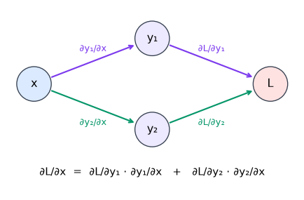
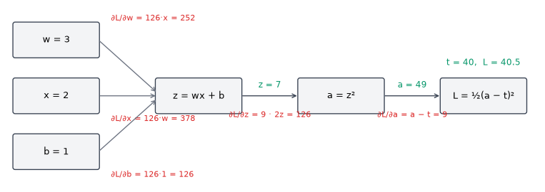

Backpropagation
How the gradient descent algorithm actually gets its gradients. The chain rule, run backwards through the network. Every "autograd" implementation — PyTorch, JAX, TensorFlow — is a general-purpose version of the algorithm this note derives by hand.
01 The problem backprop solves
The one question
Gradient descent needs to know:
For a deep network, \theta might be a weight buried 100 layers deep. How does that single number affect the loss at the end?
Why forward-mode differentiation isn't enough
Getting the derivatives one parameter at a time, by nudging each parameter and re-running the network (finite differences) or by forward-mode automatic differentiation, takes O(P) passes for P parameters. GPT-3 has 175 billion parameters. That is hopeless.
Reverse mode (backpropagation) computes all P gradients in one backward pass by re-using shared intermediate results. That pass costs about as much as one or two forward passes, whatever P is.
That 175\text{B}-vs-1 ratio is why deep learning is possible at all.
The high-level recipe
- Forward pass — push input through network, compute loss. Save every intermediate activation.
- Backward pass — starting from the loss, apply the chain rule backwards through each layer. At every parameter, multiply the incoming "upstream gradient" by that parameter's local Jacobian.
Backprop is just the chain rule applied recursively. But it took the field until 1986 to popularise this simple observation.
02 Prerequisite — the chain rule
The one-variable case
If y = f(x) and z = g(y), then z = g(f(x)) and:
Cascade of local derivatives — the derivative of an outer function times the derivative of the inner one.
Longer chains
For x \to y \to z \to w:
Each layer contributes one local derivative. Backprop propagates the product from right to left — from the loss back to x.
Multiple variables

Python code for this figure
import matplotlib.pyplot as plt
from matplotlib.patches import Circle
fig, ax = plt.subplots(figsize=(8, 3.6))
nodes = {"x": (0, 0), "y₁": (2.6, 1), "y₂": (2.6, -1), "L": (5.2, 0)}
for k, (a, b) in nodes.items():
ax.add_patch(Circle((a, b), 0.38, fc="#ede9fe" if k not in ("x", "L") else ("#dbeafe" if k == "x" else "#fee2e2"), ec="#374151"))
ax.text(a, b, k, ha="center", va="center", fontsize=12)
def arrow(a, b, lab, c, dy):
(x0, y0), (x1, y1) = nodes[a], nodes[b]
ax.annotate("", (x1 - 0.38 * (x1 - x0) / 2.8, y1 - 0.38 * (y1 - y0) / 2.8), (x0 + 0.38 * (x1 - x0) / 2.8, y0 + 0.38 * (y1 - y0) / 2.8),
arrowprops=dict(arrowstyle="->", color=c, lw=1.6))
ax.text((x0 + x1) / 2, (y0 + y1) / 2 + dy, lab, ha="center", fontsize=10, color=c)
arrow("x", "y₁", "∂y₁/∂x", "#7c3aed", 0.22); arrow("y₁", "L", "∂L/∂y₁", "#7c3aed", 0.22)
arrow("x", "y₂", "∂y₂/∂x", "#059669", -0.4); arrow("y₂", "L", "∂L/∂y₂", "#059669", -0.4)
ax.text(2.6, -2.0, "∂L/∂x = ∂L/∂y₁ · ∂y₁/∂x + ∂L/∂y₂ · ∂y₂/∂x", ha="center", fontsize=11)
ax.set_xlim(-0.6, 5.8); ax.set_ylim(-2.4, 1.7); ax.set_aspect("equal"); ax.axis("off")
plt.show()If L depends on x through multiple intermediate variables:
Summed over every path from x to L. This is the version that matters for neural networks — a weight in an early layer affects the loss through many downstream neurons.
03 Scalar case — one variable, hand-worked

Python code for this figure
import matplotlib.pyplot as plt
from matplotlib.patches import FancyBboxPatch
fig, ax = plt.subplots(figsize=(10, 3.4))
boxes = [("w = 3", 0, 1.0), ("x = 2", 0, 0.0), ("b = 1", 0, -1.0), ("z = wx + b", 2.6, 0), ("a = z²", 5.2, 0), ("L = ½(a − t)²", 7.8, 0)]
for lab, x, y in boxes:
ax.add_patch(FancyBboxPatch((x - 0.75, y - 0.28), 1.5, 0.56, boxstyle="round,pad=0.04", fc="#f3f4f6", ec="#374151"))
ax.text(x, y, lab, ha="center", va="center", fontsize=9.5)
for y, g in [(1.0, "∂L/∂w = 126·x = 252"), (0.0, "∂L/∂x = 126·w = 378"), (-1.0, "∂L/∂b = 126·1 = 126")]:
ax.annotate("", (1.85, 0.05 * y), (0.77, y), arrowprops=dict(arrowstyle="->", color="#6b7280"))
ax.text(1.0, y - 0.45 if y < 1 else y + 0.35, g, fontsize=8.5, color="#dc2626")
for x0, x1, fwd, bwd in [(2.6, 5.2, "z = 7", "∂L/∂z = 9 · 2z = 126"), (5.2, 7.8, "a = 49", "∂L/∂a = a − t = 9")]:
ax.annotate("", (x1 - 0.77, 0), (x0 + 0.77, 0), arrowprops=dict(arrowstyle="->", color="#374151"))
ax.text((x0 + x1) / 2, 0.15, fwd, ha="center", fontsize=9, color="#059669")
ax.text((x0 + x1) / 2, -0.38, bwd, ha="center", fontsize=8.5, color="#dc2626")
ax.text(7.8, 0.55, "t = 40, L = 40.5", ha="center", fontsize=9, color="#059669")
ax.set_xlim(-0.9, 8.8); ax.set_ylim(-1.6, 1.6); ax.axis("off")
plt.show()Setup
Consider a one-neuron "network":
- Input: x = 2.
- Weight: w = 3, bias: b = 1.
- Pre-activation: z = w x + b = 7.
- Activation: a = z^2 = 49.
- Target: t = 40.
- Loss: L = \frac{1}{2} (a - t)^2 = \frac{1}{2} (49 - 40)^2 = 40.5.
Question: what is \partial L / \partial w?
Forward pass — cache the intermediates
x = 2 z = w * x + b = 3 * 2 + 1 = 7 a = z ** 2 = 49 L = 0.5 * (a - t) ** 2 = 40.5
Backward pass — apply the chain rule
Start from the loss and work backwards, one operation at a time:
- \frac{\partial L}{\partial L} = 1
- \frac{\partial L}{\partial a} = a - t = 49 - 40 = 9
- \frac{\partial L}{\partial z} = \frac{\partial L}{\partial a} \cdot \frac{\partial a}{\partial z} = 9 \cdot 2z = 9 \cdot 14 = 126
- \frac{\partial L}{\partial w} = \frac{\partial L}{\partial z} \cdot \frac{\partial z}{\partial w} = 126 \cdot x = 126 \cdot 2 = 252
Verify numerically
Nudge w by \epsilon = 10^{-4} and see how L changes:
- L(w + \epsilon) = 0.5 \cdot ((3.0001 \cdot 2 + 1)^2 - 40)^2 \approx 40.525
- \frac{L(w + \epsilon) - L(w)}{\epsilon} \approx 252
Matches ✓. The algorithm works.
A slightly bigger example
Two inputs, a sigmoid and a squared error: x_1 = 1, x_2 = 2, w_1 = 0.5, w_2 = -1, b = 1, target t = 1.
Forward:
- z = w_1 x_1 + w_2 x_2 + b = 0.5 - 2 + 1 = -0.5
- a = \sigma(z) = 1 / (1 + e^{0.5}) \approx 0.3775
- L = \tfrac12 (a - t)^2 = \tfrac12 (0.6225)^2 \approx 0.1937
Backward, one local derivative per step:
| Quantity | Chain | Value |
|---|---|---|
| \partial L / \partial a | a - t | -0.6225 |
| \partial L / \partial z | \partial L/\partial a \cdot \sigma'(z), with \sigma'(z) = a(1 - a) = 0.2350 | -0.1463 |
| \partial L / \partial w_1 | \partial L/\partial z \cdot x_1 | -0.1463 |
| \partial L / \partial w_2 | \partial L/\partial z \cdot x_2 | -0.2926 |
| \partial L / \partial b | \partial L/\partial z \cdot 1 | -0.1463 |
All three gradients are negative, so gradient descent raises w_1, w_2 and b, which raises z and pushes a toward the target 1. w_2 gets twice the push of w_1 because its input is twice as large.
PyTorch's autograd builds the same graph and gets the same numbers. Change any value and run it again:
import torch
x = torch.tensor([1.0, 2.0])
w = torch.tensor([0.5, -1.0], requires_grad=True)
b = torch.tensor(1.0, requires_grad=True)
t = 1.0
z = w @ x + b
a = torch.sigmoid(z)
L = 0.5 * (a - t) ** 2
L.backward() # the backward pass, done for you
print(f"z = {z.item():.4f} a = {a.item():.4f} L = {L.item():.4f}")
print("dL/dw =", w.grad.numpy().round(4), " dL/db =", round(b.grad.item(), 4))z = -0.5000 a = 0.3775 L = 0.1937 dL/dw = [-0.1463 -0.2926] dL/db = -0.1463
Every backprop derivation is this pattern, however tall the stack of operations gets.
04 Backprop in a multi-layer perceptron
Extending the scalar case to real networks. Same chain rule, just with vectors and matrices.
Notation
For layer \ell = 1, \ldots, L:
- Weights: W^{[\ell]}, biases: \mathbf{b}^{[\ell]}
- Pre-activation: \mathbf{z}^{[\ell]} = W^{[\ell]} \mathbf{a}^{[\ell-1]} + \mathbf{b}^{[\ell]}
- Activation: \mathbf{a}^{[\ell]} = g^{[\ell]}(\mathbf{z}^{[\ell]})
- Input: \mathbf{a}^{[0]} = \mathbf{x}
- Output: \hat{\mathbf{y}} = \mathbf{a}^{[L]}
The four equations of backprop
Define \boldsymbol{\delta}^{[\ell]} = \partial L / \partial \mathbf{z}^{[\ell]} (the "error" at layer \ell). Then:
1. Output-layer error:
2. Error at any hidden layer (propagate from \ell+1 back to \ell):
3. Weight gradient:
4. Bias gradient:
That's the whole algorithm. Every deep-learning framework's autograd computes exactly these.
The algorithm as pseudocode
1. Forward: compute a[0], z[1], a[1], ..., z[L], a[L] = y_hat. 2. Compute δ[L] from output-layer error. 3. For ℓ = L-1 down to 1: compute δ[ℓ] via equation (2). 4. For every layer ℓ: compute ∂L/∂W[ℓ] and ∂L/∂b[ℓ] via equations (3, 4). 5. Update parameters: W[ℓ] ← W[ℓ] - η · ∂L/∂W[ℓ] (see note 06).
Cache the activations from step 1 — they're needed in steps 3 and 4.
05 The full derivation for one layer
The single weight
For weight W^{[\ell]}_{ij} connecting neuron j in layer \ell-1 to neuron i in layer \ell:
The second term is easy:
(since z^{[\ell]}_i = \sum_j W^{[\ell]}_{ij} a^{[\ell-1]}_j + b^{[\ell]}_i).
So:
Stacked into a matrix: \partial L / \partial W^{[\ell]} = \boldsymbol{\delta}^{[\ell]} \, (\mathbf{a}^{[\ell-1]})^T — exactly equation (3) above.
How \boldsymbol{\delta}^{[\ell]} is computed from \boldsymbol{\delta}^{[\ell+1]}
Each z^{[\ell]}_i affects the loss through every z^{[\ell+1]}_k:
In vector form: \boldsymbol{\delta}^{[\ell]} = (W^{[\ell+1]})^T \boldsymbol{\delta}^{[\ell+1]} \odot g'(\mathbf{z}^{[\ell]}) — equation (2).
That's the entire derivation. Everything else is bookkeeping.
06 Vanishing & exploding gradients
When backprop's recursive multiplications go wrong.
Vanishing gradients
Every layer contributes a factor of g'(\mathbf{z}) to the backward chain. For sigmoid / tanh, |g'(z)| \leq 0.25 and \leq 1 respectively. In a 20-layer network, the gradient reaching layer 1 is multiplied by ~0.25^{20} \approx 10^{-12} — essentially zero.
Symptoms: early layers barely change during training. Deep networks refuse to train.
Fixes (developed over the last 15 years):
- ReLU family — gradient is 1 for positive inputs, doesn't shrink.
- Better initialisation — Kaiming / Xavier — choose the weights' variance so activations and gradients keep roughly the same size from layer to layer.
- Batch normalisation — keeps pre-activations centred, avoids saturation.
- Residual connections — a shortcut from earlier layers, so gradients have a path that doesn't multiply through activations.
Exploding gradients
The opposite pathology — the product of many terms > 1 grows without bound.
Symptoms: loss becomes NaN. Weights hit ±∞.
Fixes:
- Gradient clipping — cap \|\nabla\| at some threshold (typically 1 or 5).
- Better initialisation — same reason as above.
- Lower learning rate — stops the diverging trajectory.
Why RNNs suffered
RNNs use the same weights at every time step — the chain of multiplications is even more extreme. Vanishing/exploding gradients are why plain RNNs failed to learn long-range dependencies, and why LSTM/GRU (with gated pathways) replaced them.
07 Modern autograd — how PyTorch does it
You almost never write backprop by hand. Frameworks trace the forward pass and generate the backward pass automatically.
The core trick — the computational graph
Every tensor operation records:
- Its inputs.
- The operation performed.
- The output.
Together this builds a directed acyclic graph — the "computational graph" — representing the whole forward computation.
Backward pass on the graph
When you call loss.backward():
- Start with
∂L/∂L = 1at the loss node. - Walk backwards through the graph in reverse topological order.
- At each node, apply the operation's known local Jacobian to the incoming gradient.
- Accumulate gradients at leaf tensors (the parameters).
The framework provides local backward rules for every primitive op (matrix multiply, ReLU, softmax, etc.). Your model composes these; autograd stitches the backward pass together.
Practical implications
- You focus on the forward pass only. Backward is automatic.
- Any composition of differentiable operations works — no need to derive by hand.
- The forward pass caches activations — memory can be tight for very deep models.
torch.utils.checkpointtrades compute for memory.
When to still know backprop by hand
- Debugging exploding/vanishing gradients — you need to know where the pathology comes from.
- Custom operations — you may need to hand-write a backward rule.
- Understanding the mechanics — helps you reason about architecture choices (why residual connections help, why batch norm smooths training).
The PyTorch notes (D3) use autograd for everything from here on.
08 Runnable demo — hand backprop matches autograd
import numpy as np
# --- Hand-coded MLP with manual backprop ---
np.random.seed(0)
X = np.array([[0, 0], [0, 1], [1, 0], [1, 1]], dtype=np.float32)
y = np.array([[0], [1], [1], [0]], dtype=np.float32) # XOR
# Init a 2-4-1 network
W1 = np.random.randn(4, 2) * 0.5; b1 = np.zeros((4, 1))
W2 = np.random.randn(1, 4) * 0.5; b2 = np.zeros((1, 1))
def sigmoid(z): return 1 / (1 + np.exp(-z))
# One forward+backward pass
X_col = X.T # (2, 4)
y_col = y.T # (1, 4)
# Forward
Z1 = W1 @ X_col + b1 # (4, 4)
A1 = sigmoid(Z1) # (4, 4)
Z2 = W2 @ A1 + b2 # (1, 4)
A2 = sigmoid(Z2) # (1, 4)
loss = 0.5 * np.mean((A2 - y_col) ** 2)
print(f"loss (hand): {loss:.6f}")
# Backward — following the four backprop equations
dA2 = (A2 - y_col) / X.shape[0] # dL/dA2 (MSE derivative)
dZ2 = dA2 * A2 * (1 - A2) # * sigmoid'
dW2 = dZ2 @ A1.T # (1, 4)
db2 = dZ2.sum(axis=1, keepdims=True)
dA1 = W2.T @ dZ2 # (4, 4)
dZ1 = dA1 * A1 * (1 - A1)
dW1 = dZ1 @ X_col.T # (4, 2)
db1 = dZ1.sum(axis=1, keepdims=True)
print(f"hand ∂L/∂W1[0,0] = {dW1[0, 0]:.6f}")
print(f"hand ∂L/∂W2[0,1] = {dW2[0, 1]:.6f}")loss (hand): 0.133730 hand ∂L/∂W1[0,0] = -0.000142 hand ∂L/∂W2[0,1] = 0.019675
Same computation with PyTorch autograd
import torch # the same network and weights as above, with autograd doing the backward pass
Xt = torch.tensor(X.T, dtype=torch.float32)
yt = torch.tensor(y.T, dtype=torch.float32)
W1t = torch.tensor(W1, dtype=torch.float32, requires_grad=True)
b1t = torch.tensor(b1, dtype=torch.float32, requires_grad=True)
W2t = torch.tensor(W2, dtype=torch.float32, requires_grad=True)
b2t = torch.tensor(b2, dtype=torch.float32, requires_grad=True)
Z1t = W1t @ Xt + b1t
A1t = torch.sigmoid(Z1t)
Z2t = W2t @ A1t + b2t
A2t = torch.sigmoid(Z2t)
loss_t = 0.5 * ((A2t - yt) ** 2).mean()
print(f"loss (torch): {loss_t.item():.6f}")
loss_t.backward()
print(f"torch ∂L/∂W1[0,0] = {W1t.grad[0, 0].item():.6f}")
print(f"torch ∂L/∂W2[0,1] = {W2t.grad[0, 1].item():.6f}")
match_W1 = np.allclose(dW1, W1t.grad.numpy(), atol=1e-6)
match_W2 = np.allclose(dW2, W2t.grad.numpy(), atol=1e-6)
print(f"\nhand and torch agree on ∂L/∂W1: {match_W1}")
print(f"hand and torch agree on ∂L/∂W2: {match_W2}")loss (torch): 0.133730 torch ∂L/∂W1[0,0] = -0.000142 torch ∂L/∂W2[0,1] = 0.019675 hand and torch agree on ∂L/∂W1: True hand and torch agree on ∂L/∂W2: True
Numerical gradient check
def loss_hand(W1_p, b1_p, W2_p, b2_p):
Z1 = W1_p @ X_col + b1_p
A1 = sigmoid(Z1)
Z2 = W2_p @ A1 + b2_p
A2 = sigmoid(Z2)
return 0.5 * np.mean((A2 - y_col) ** 2)
# Numerically differentiate ∂L/∂W1[0,0]
eps = 1e-5
W1p = W1.copy(); W1p[0, 0] += eps
W1m = W1.copy(); W1m[0, 0] -= eps
grad_num = (loss_hand(W1p, b1, W2, b2) - loss_hand(W1m, b1, W2, b2)) / (2 * eps)
print(f"numerical grad ∂L/∂W1[0,0] = {grad_num:.6f}")
print(f"analytical grad = {dW1[0, 0]:.6f}")
print(f"match: {np.isclose(grad_num, dW1[0, 0], atol=1e-4)}")numerical grad ∂L/∂W1[0,0] = -0.000142 analytical grad = -0.000142 match: True
The takeaway
Backprop derived by hand, PyTorch's autograd, and numerical differentiation all give the same gradient. That's the sanity check every DL library implements to catch bugs.
You'll never write hand backprop for a real model. But knowing what autograd does when you call .backward() is the difference between magic-that-works and understanding-what-you-built.